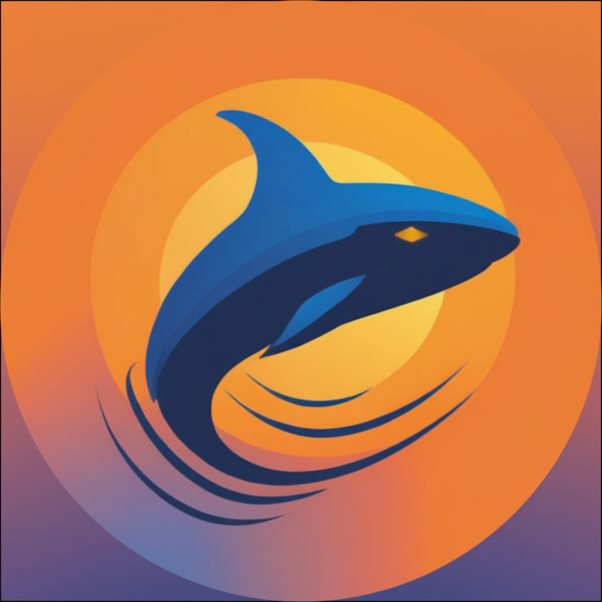

// 01_User_Identity

巫奕嶔 (Jason Wu)
FULL_STACK_DEV
IOT_ENGINEER
SECURITY_RESEARCHER
> 國立臺東高級中學 | 2007/05/04
> 受父親影響啟蒙資訊技術，從樂高機器人到全端開發。
> 熱衷於將程式應用於解決真實問題（如農業、學習工具）。
> 目前專注於 Web Security、AI 應用與 IoT 整合。
- MAIL: woowujasonwu@gmail.com
- GITHUB: JasonWu55
- INSTAGRAM: @jason_wu.0504
- LANG: Chinese (Native) / English (TOEIC 810)
// 02_System_Stats
Backend Architecture 90%
Social Engineering 90%
IoT / Hardware 80%
AI Application 75%
Info Security 60%
Frontend Dev 60%
[ KNOWN_LANGUAGES ]
JavaScript PHP Python C++ HTML/CSS SQL// 03_Project_Database
學測單字卡 & 對戰系統
ONLINE為解決考生背單字枯燥問題，開發具備「多人對戰」與「AI 例句生成」的學習平台。
- > 使用 PHP/JS 開發，修復開源專案 BUG。
- > 自架 Ollama (Llama 3.1) 模型生成例句。
- > 整合 Socket 實現即時對戰遊戲。
- > Discord 登入整合與跨裝置同步。
數位化雲端農田管理
HARDWARE結合軟硬體的 IoT 專案，透過感測器與雲端數據分析，解決農業管理效率問題。
- > 硬體：ESP32, Raspberry Pi, RS485 土壤感測器。
- > 軟體：Google Cloud API, ThingSpeak 圖表。
- > 解決記憶體限制優化傳輸頻率。
鯨魚商城機器人
DISCORD_BOT基於 Discord Bot API 的自動化虛擬商品販售系統，整合台灣在地金流。
- > 串接「藍新金流 API」支援超商/ATM付款。
- > 實作購物車系統與自動發貨功能。
- > 改寫開源專案以符合商業邏輯。
Minecraft 伺服器架構
INFRASTRUCTURE從單純遊玩轉向伺服器營運，鑽研伺服器管理與插件開發。
- > Linux 系統維護、抗 DDoS 防護設定。
- > 自製材質包與 paint.net 繪製 UI。
- > 建立贊助系統與社群經營管理。
// 04_System_Logs (Achievements)
[2024]
AIS3 Junior 教育部資安人才培育計畫 - 最佳七人獎
[2024]
APCS 大學程式設計先修檢測 (觀念:3級 / 實作:3級)
[2023]
成大 AI 人才研修班 - AI 之星獎
[2023]
校內資訊學科能力競賽 - 佳作
[CERT]
TOEIC 多益英語測驗 - 810分 (Blue)
[VOLN]
國立臺灣史前文化博物館志工 - 服務時數 50+ 小時